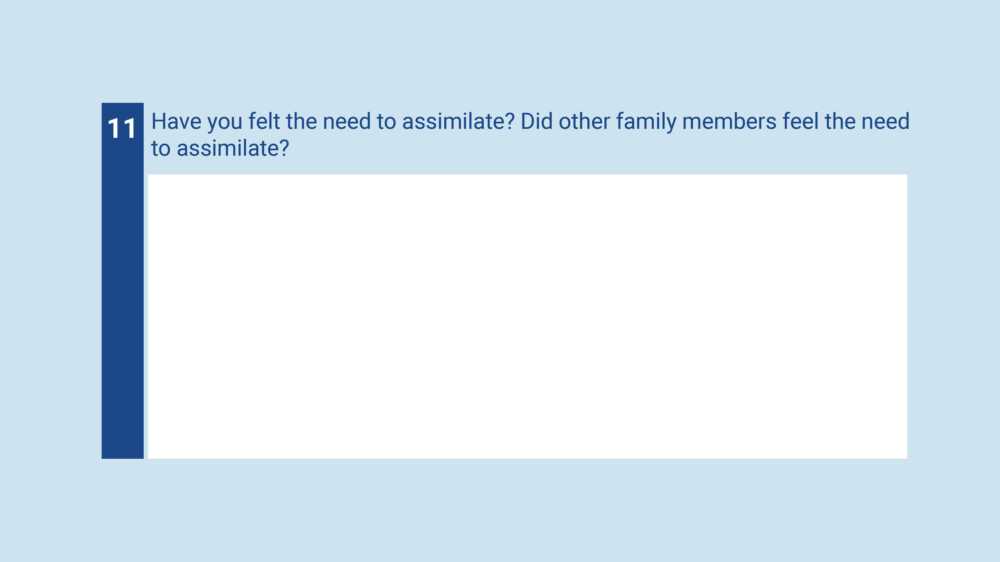
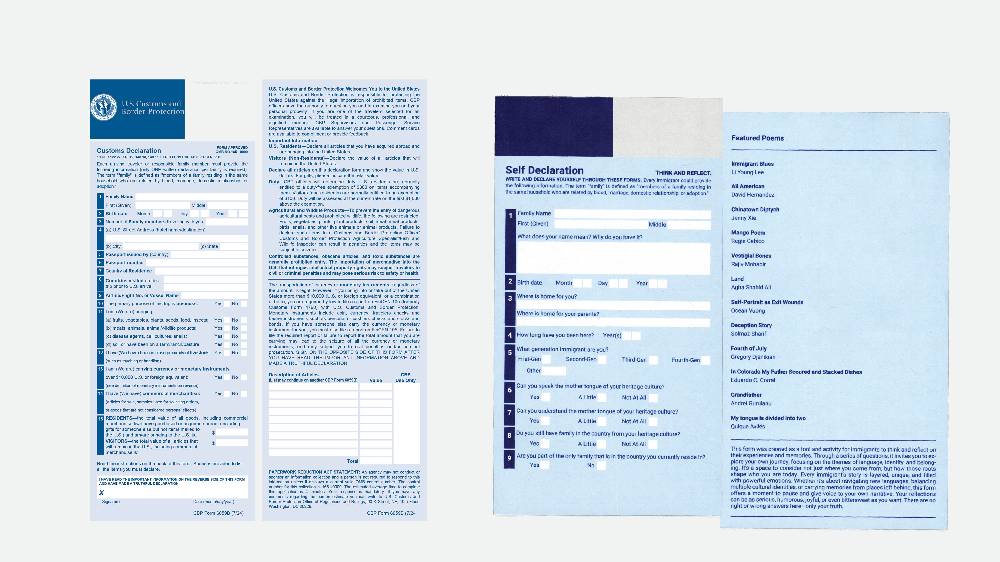
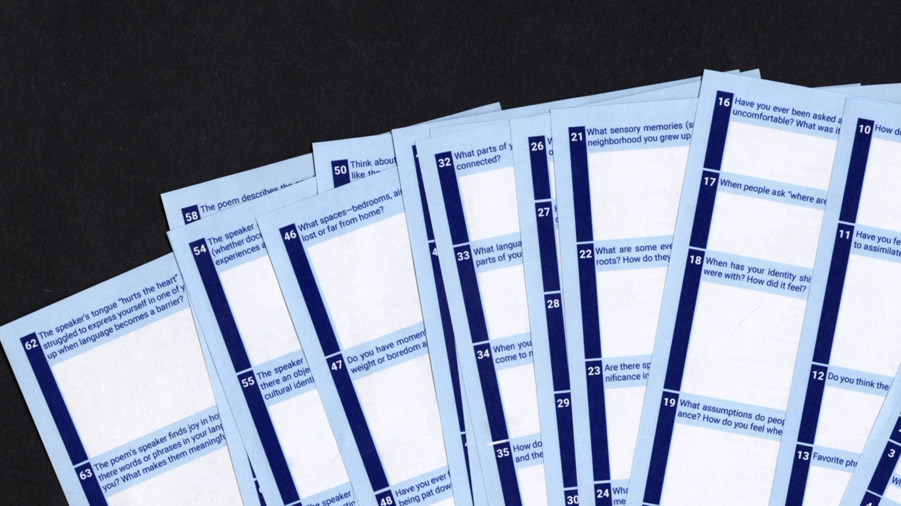
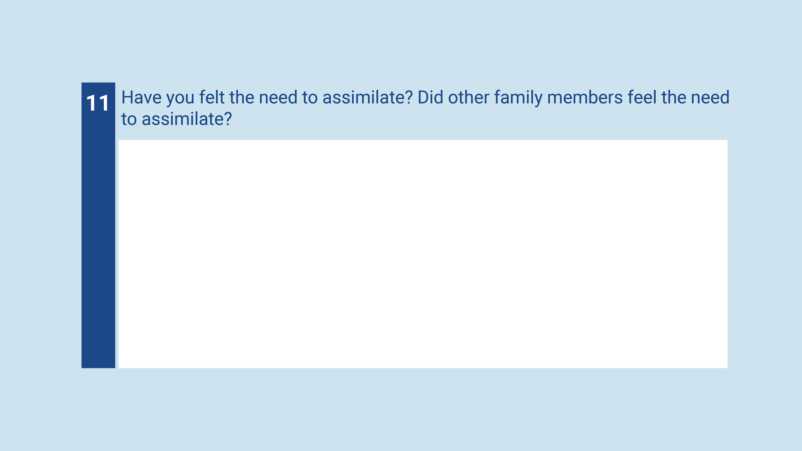
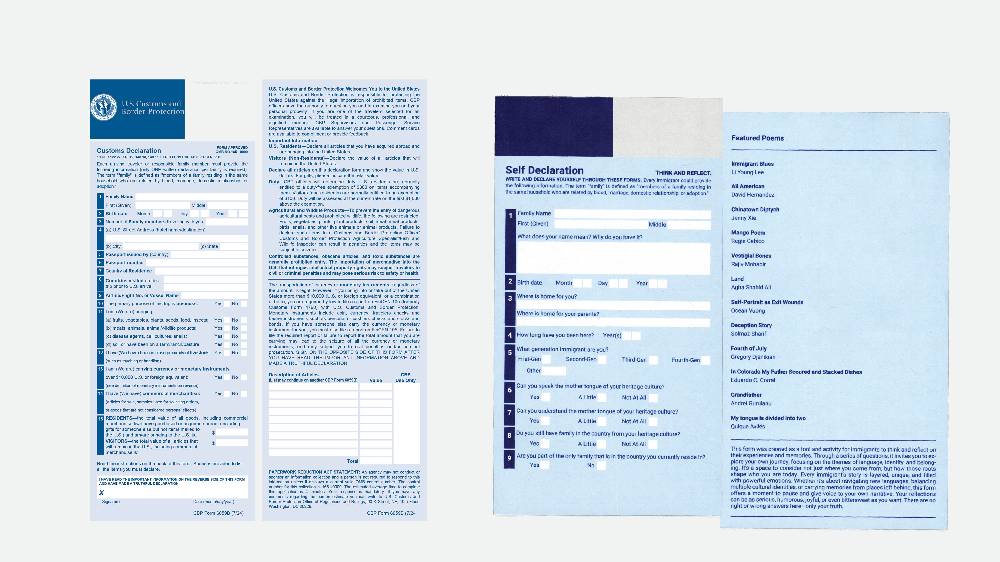
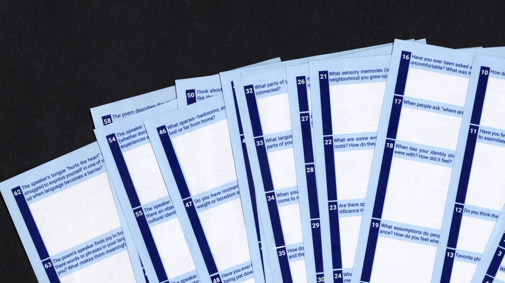

This series of forms using the vernacular of the United States customs form aims to allow immigrants to reflect on their identities and experiences through personal questions and an anthology of poems.
 




